Refer to the guide Setting up and getting started.
.puml files used to create diagrams in this document docs/diagrams folder. Refer to the PlantUML Tutorial at se-edu/guides to learn how to create and edit diagrams.
The Architecture Diagram given above explains the high-level design of the App.
Given below is a quick overview of main components and how they interact with each other.
Main components of the architecture
Main (consisting of classes Main and MainApp) is in charge of the app launch and shut down.
The bulk of the app’s work is done by the following four components:
UI: The UI of the App.Logic: The command executor.Model: Holds the data of the App in memory.Storage: Reads data from, and writes data to, the hard disk.Commons represents a collection of classes used by multiple other components.
How the architecture components interact with each other
The Sequence Diagram below shows how the components interact with each other for the scenario where the user issues the command delete 1.
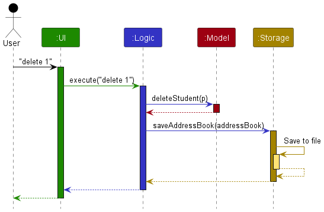
Each of the four main components (also shown in the diagram above),
interface with the same name as the Component.{Component Name}Manager class (which follows the corresponding API interface mentioned in the previous point.For example, the Logic component defines its API in the Logic.java interface and implements its functionality using the LogicManager.java class which follows the Logic interface. Other components interact with a given component through its interface rather than the concrete class (reason: to prevent outside component’s being coupled to the implementation of a component), as illustrated in the (partial) class diagram below.

The sections below give more details of each component.
The API of this component is specified in Ui.java
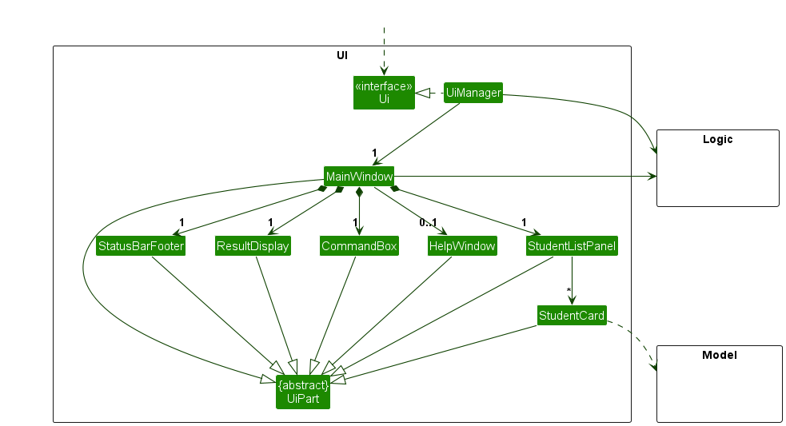
The UI consists of a MainWindow that is made up of parts e.g.CommandBox, ResultDisplay, StudentListPanel, StatusBarFooter etc. All these, including the MainWindow, inherit from the abstract UiPart class which captures the commonalities between classes that represent parts of the visible GUI.
The UI component uses the JavaFx UI framework. The layout of these UI parts are defined in matching .fxml files that are in the src/main/resources/view folder. For example, the layout of the MainWindow is specified in MainWindow.fxml
The UI component,
Logic component.Model data so that the UI can be updated with the modified data.Logic component, because the UI relies on the Logic to execute commands.Model component, as it displays Student object residing in the Model.API : Logic.java
Here’s a (partial) class diagram of the Logic component:
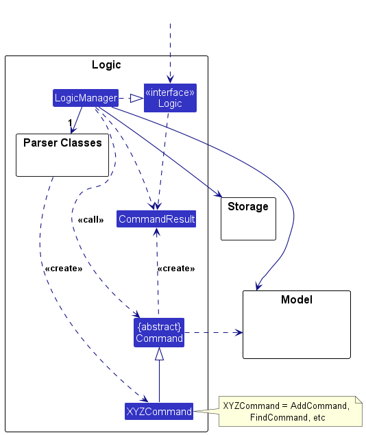
The sequence diagram below illustrates the interactions within the Logic component, taking execute("findStarsLT 1") API call as an example.
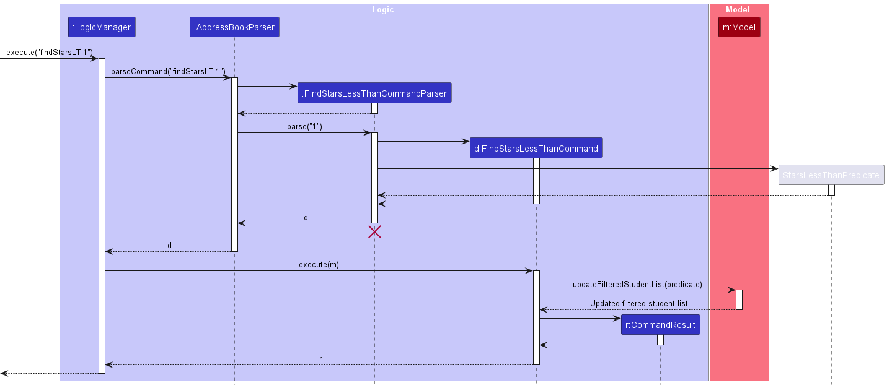
FindStarsLessThanCommandParser should end at the destroy marker (X) but due to a limitation of PlantUML, the lifeline continues till the end of diagram.
How the Logic component works:
Logic is called upon to execute a command, it is passed to an AddressBookParser object which in turn creates a parser that matches the command (e.g., FindStarsLessThanCommandParser) and uses it to parse the command.Command object (more precisely, an object of one of its subclasses e.g., FindStarsLessThanCommand) which is executed by the LogicManager.Model when it is executed (e.g. to return students with number of stars less than specified number).Model) to achieve.CommandResult object which is returned back from Logic.Here are the other classes in Logic (omitted from the class diagram above) that are used for parsing a user command:
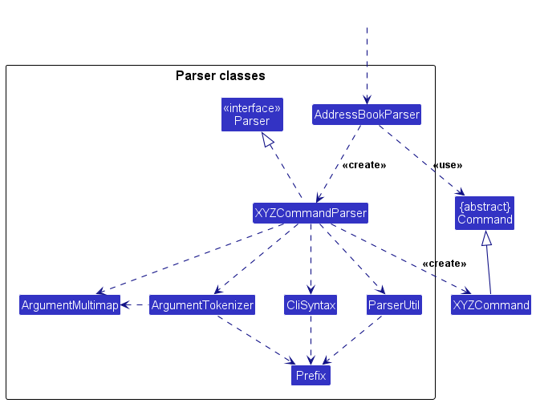
How the parsing works:
AddressBookParser class creates an XYZCommandParser (XYZ is a placeholder for the specific command name e.g., AddCommandParser) which uses the other classes shown above to parse the user command and create a XYZCommand object (e.g., AddCommand) which the AddressBookParser returns back as a Command object.XYZCommandParser classes (e.g., AddCommandParser, DeleteCommandParser, …) inherit from the Parser interface so that they can be treated similarly where possible e.g, during testing.API : Model.java
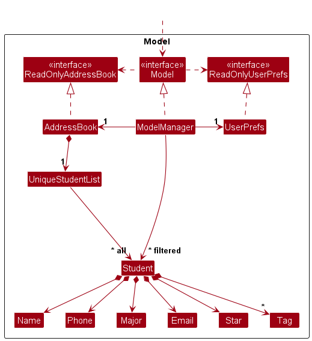
The Model component,
Student objects (which are contained in a UniqueStudentList object).Student objects (e.g., results of a search query) as a separate filtered list which is exposed to outsiders as an unmodifiable ObservableList<Student> that can be ‘observed’ e.g. the UI can be bound to this list so that the UI automatically updates when the data in the list change.UserPref object that represents the user’s preferences. This is exposed to the outside as a ReadOnlyUserPref objects.Model represents data entities of the domain, they should make sense on their own without depending on other components)Tag list in the AddressBook, which Student references. This allows AddressBook to only require one Tag object per unique tag, instead of each Student needing their own Tag objects.API : Storage.java
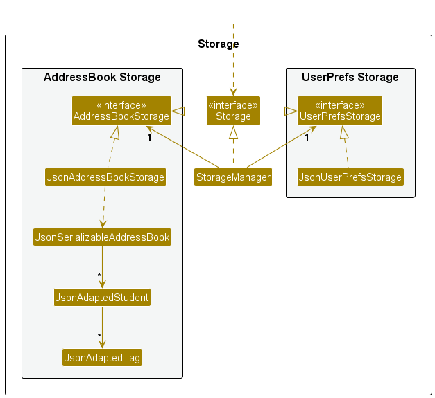
The Storage component,
AddressBookStorage and UserPrefStorage, which means it can be treated as either one (if only the functionality of only one is needed).Model component (because the Storage component’s job is to save/retrieve objects that belong to the Model)Classes used by multiple components are in the seedu.addressbook.commons package.
This section describes some noteworthy details on how certain features are implemented.
The star mechanism is facilitated by StarCommand, which is called by its execute method to add stars to a Student.
StarCommandParser#parse() — Parses the parameters of the star command from its command-line String input.StarCommand#execute() — Updates the AddressBook with the added stars.Here is the activity diagram showing the process of the star command:
Here is the sequence diagram showing how a star operation goes through the Logic, Model and Storage components.
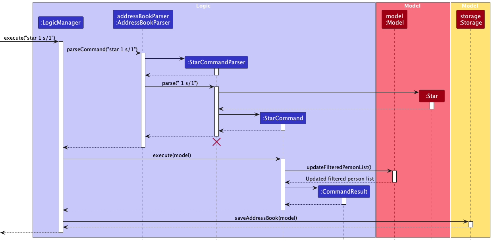
Step 1. The user launches the application for the first time and enters in command: star 1 s/2.
Step 2. The LogicManager calls on AddressBookParser to parse the String.
Step 3. The AddressBookParser calls StarCommandParser.parse(), which returns a StarCommand.
Step 4. LogicManager calls on StarCommand.execute(), which updates the addressbook with the new number of stars.
Aspect: How star executes:
Star command.
Edit command.
The sorting mechanism is facilitated by SortCommand, which is called by its execute method to sort the students
based on one of its fields either in ascending or descending order
SortCommandParser#parse() — Parses the parameters of the sort command from its command-line String input.SortCommand#execute() — Updates the AddressBook to display the sorted list.Here is the activity diagram showing the process of the Sort command:
Here is the sequence diagram showing how a sort operation goes through the Logic, Model and Storage components.
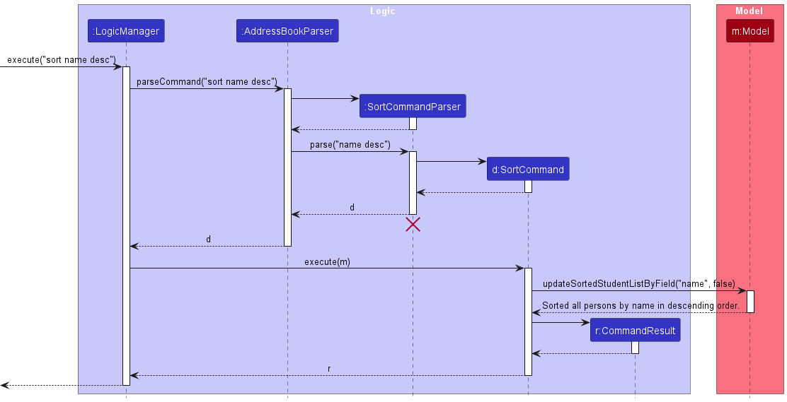
Step 1. The user launches the application for the first time and enters in command: sort name desc.
Step 2. The LogicManager calls on AddressBookParser to parse the String.
Step 3. The AddressBookParser calls SortCommandParser.parse(), which returns a SortCommand.
field or sorting order isAscending,
then it will raise a parse error.
Step 4. LogicManager calls on SortCommand.execute(), which updates the addressbook with the new sorted list.
The bolt mechanism is facilitated by BoltCommand, which is called by its execute method to add bolts to a Student.
BoltCommandParser#parse() — Parses the parameters of the bolt command from its command-line String input.BoltCommand#execute() — Updates the AddressBook with the added bolts.Here is the activity diagram showing the process of the bolt command:
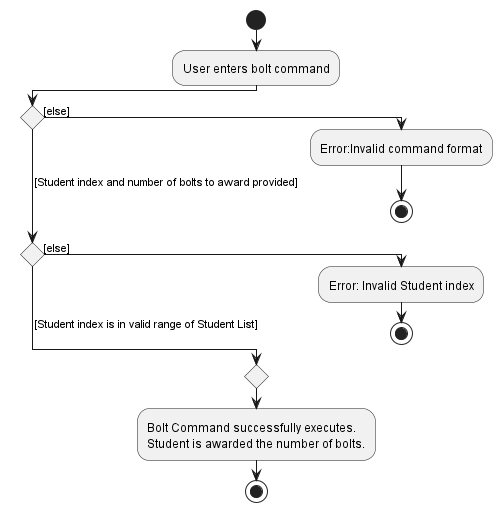
Here is the sequence diagram showing how a bolt operation goes through the Logic, Model and Storage components.
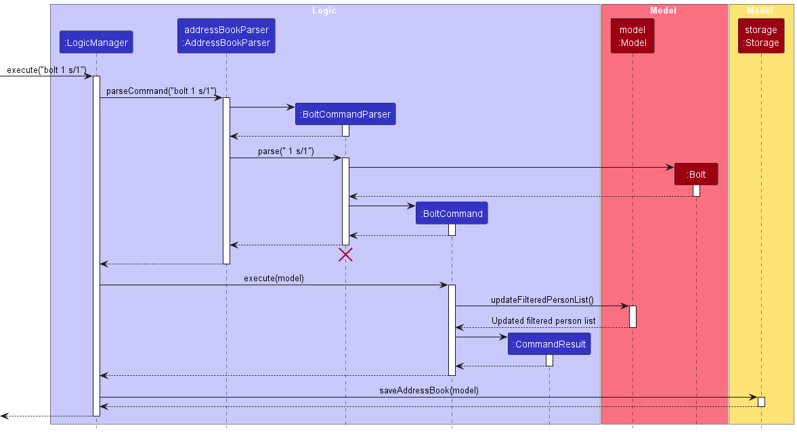
Step 1. The user launches the application for the first time and enters in command: bolt 1 b/2.
Step 2. The LogicManager calls on AddressBookParser to parse the String.
Step 3. The AddressBookParser calls BoltCommandParser.parse(), which returns a BoltCommand.
Step 4. LogicManager calls on BoltCommand.execute(), which updates the addressbook with the new number of bolts.
Aspect: How bolt executes:
Bolt command.
Edit command.
The proposed undo/redo mechanism is facilitated by VersionedAddressBook. It extends AddressBook with an undo/redo history, stored internally as an addressBookStateList and currentStatePointer. Additionally, it implements the following operations:
VersionedAddressBook#commit() — Saves the current address book state in its history.VersionedAddressBook#undo() — Restores the previous address book state from its history.VersionedAddressBook#redo() — Restores a previously undone address book state from its history.These operations are exposed in the Model interface as Model#commitAddressBook(), Model#undoAddressBook() and Model#redoAddressBook() respectively.
Given below is an example usage scenario and how the undo/redo mechanism behaves at each step.
Step 1. The user launches the application for the first time. The VersionedAddressBook will be initialized with the initial address book state, and the currentStatePointer pointing to that single address book state.
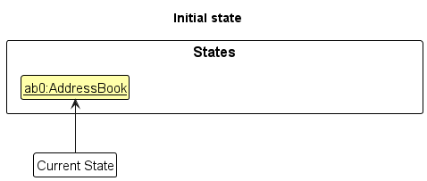
Step 2. The user executes delete 5 command to delete the 5th student in the address book. The delete command calls Model#commitAddressBook(), causing the modified state of the address book after the delete 5 command executes to be saved in the addressBookStateList, and the currentStatePointer is shifted to the newly inserted address book state.
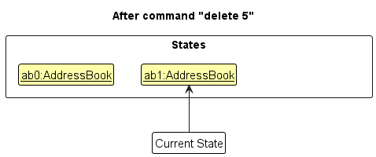
Step 3. The user executes add n/David … to add a new student. The add command also calls Model#commitAddressBook(), causing another modified address book state to be saved into the addressBookStateList.
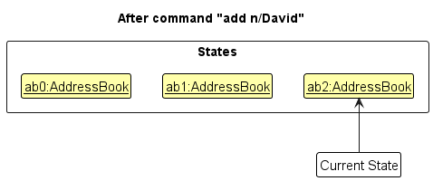
Model#commitAddressBook(), so the address book state will not be saved into the addressBookStateList.
Step 4. The user now decides that adding the student was a mistake, and decides to undo that action by executing the undo command. The undo command will call Model#undoAddressBook(), which will shift the currentStatePointer once to the left, pointing it to the previous address book state, and restores the address book to that state.
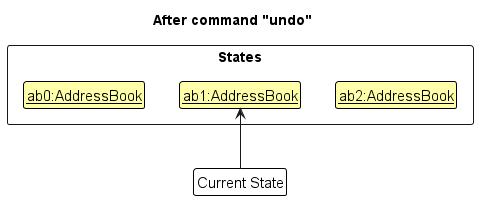
currentStatePointer is at index 0, pointing to the initial AddressBook state, then there are no previous AddressBook states to restore. The undo command uses Model#canUndoAddressBook() to check if this is the case. If so, it will return an error to the user rather
than attempting to perform the undo.
The following sequence diagram shows how an undo operation goes through the Logic component:
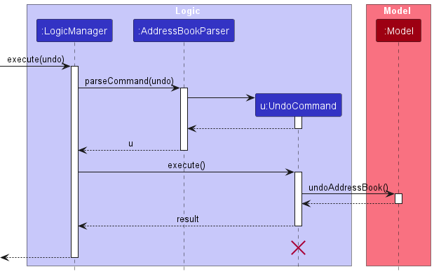
UndoCommand should end at the destroy marker (X) but due to a limitation of PlantUML, the lifeline reaches the end of diagram.
Similarly, how an undo operation goes through the Model component is shown below:
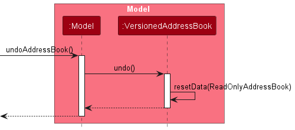
The redo command does the opposite — it calls Model#redoAddressBook(), which shifts the currentStatePointer once to the right, pointing to the previously undone state, and restores the address book to that state.
currentStatePointer is at index addressBookStateList.size() - 1, pointing to the latest address book state, then there are no undone AddressBook states to restore. The redo command uses Model#canRedoAddressBook() to check if this is the case. If so, it will return an error to the user rather than attempting to perform the redo.
Step 5. The user then decides to execute the command list. Commands that do not modify the address book, such as list, will usually not call Model#commitAddressBook(), Model#undoAddressBook() or Model#redoAddressBook(). Thus, the addressBookStateList remains unchanged.
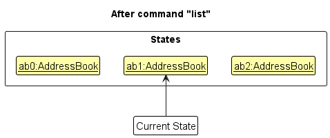
Step 6. The user executes clear, which calls Model#commitAddressBook(). Since the currentStatePointer is not pointing at the end of the addressBookStateList, all address book states after the currentStatePointer will be purged. Reason: It no longer makes sense to redo the add n/David … command. This is the behavior that most modern desktop applications follow.
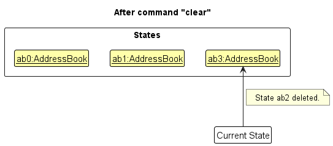
The following activity diagram summarizes what happens when a user executes a new command:
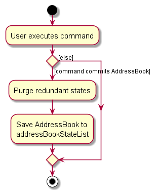
Aspect: How undo & redo executes:
delete, just save the student being deleted).{more aspects and alternatives to be added}
{Explain here how the data archiving feature will be implemented}
This feature is an extension of the ‘Stars’ feature. When a TA gives a student stars, they can also leave a comment to explain why the Student received them. Each instance of a user giving stars (with optional comments) can be stored by Student.
 .
.
Users will be able to add comments to a student by using the star command:
Usage: star INDEX s/STARS [c/COMMENT]
the edit command will also be extended to allow users to edit the comments.
Usage: edit INDEX ...c/INDEX2 COMMENT...
The command will edit the comment at the student with index INDEX with comment index INDEX2.
Alternative 1
Alternative 2
 .
.
Target user profile:
Value proposition: manage contacts faster than a typical mouse/GUI driven app
Priorities: High (must have) - * * *, Medium (nice to have) - * *, Low (unlikely to have) - *
| Priority | As a … | I want to … | So that I can… |
|---|---|---|---|
* * * |
TA using the App for the first time | see usage instructions | refer to instructions when I forget how to use the App |
* * * |
TA | add a new student | |
* * * |
TA | delete a student | remove entries that I no longer need |
* * * |
TA | find a student by name | locate details of students without having to go through the entire list |
* * * |
TA | know the majors of my students | understand their learning needs |
* |
TA | have a personal description of the student | know more about them |
* * * |
TA | give student stars for class participation | give credit for class participation |
* * * |
TA | view a student’s participation | gauge their engagement in class |
* |
TA | sort students based on participation | praise those who have taken initiative and remind those who have not to be more proactive |
* * * |
TA | tag the students by their TGs | remember which class my students are in |
* * * |
TA | tag the students by their modules | remember which module my students are in |
* * |
TA | filter the students by their TGs | view all the students from a TG |
* * |
TA | filter students by their modules | view all the students from a module |
* * |
TA | identify underperforming students with bad grades | intervene and help them |
* * |
TA | check who’s work I havent graded yet | remember to do so |
* * |
TA | exit the program | |
* |
TA | clear all students’ details | remove all entries quickly |
* |
TA with many students in the address book | sort students by name | locate a student easily |
{More to be added}
(For all use cases below, the System is the ClassMonitor and the Actor is the TA, unless specified otherwise)
Use case: Delete a student
MSS
ClassMonitor deletes the student
Use case ends.
Extensions
2a. The list is empty.
Use case ends.
3a. The given index is invalid.
3a1. ClassMonitor shows an error message.
Use case resumes at step 2.
Use case: Add a student
MSS
ClassMonitor adds the student
Use case ends.
Extensions
2a1. ClassMonitor shows an error message.
Use case ends.
Use case: Add a tag to a student
MSS
ClassMonitor adds the tag
Use case ends.
Extensions
2a. The list is empty.
Use case ends.
3a. The given index is invalid.
3a1. ClassMonitor shows an error message.
Use case resumes at step 2.
Use case: Find a student by name
MSS
ClassMonitor returns the specific student’s details
Use case ends.
Extensions
2a. The list is empty.
Use case ends.
3a. The given keyword does not match any student’s name.
3a1. ClassMonitor shows an error message.
Use case resumes at step 2.
Use case: Add a star to a student
MSS
ClassMonitor adds a star to the student
Use case ends.
Extensions
2a. The list is empty.
Use case ends.
Use case: Filter students by tag
MSS
ClassMonitor shows a filtered list of students
Use case ends.
Extensions
2a. The list is empty.
3a. The given tag does not exist.
3a1. ClassMonitor shows an error message.
Use case resumes at step 2.
Use case ends.
Use case: Sort list of students by parameter
MSS
ClassMonitor shows a sorted list of students.
Use case ends.
Extensions
2a. The list is empty.
3a. The given parameter does not exist.
3a1. ClassMonitor shows an error message.
Use case resumes at step 2.
Use case ends.
11 or above installed.Given below are instructions to test the app manually.
Initial launch
Download the jar file and copy into an empty folder
Double-click the jar file Expected: Shows the GUI with a set of sample contacts. The window size may not be optimum.
Saving window preferences
Resize the window to an optimum size. Move the window to a different location. Close the window.
Re-launch the app by double-clicking the jar file.
Expected: The most recent window size and location is retained.
{ more test cases … }
Deleting a student while all students are being shown
Prerequisites: List all students using the list command. Multiple students in the list.
Test case: delete 1
Expected: First contact is deleted from the list. Details of the deleted contact shown in the status message. Timestamp in the status bar is updated.
Test case: delete 0
Expected: No student is deleted. Error details shown in the status message. Status bar remains the same.
Other incorrect delete commands to try: delete, delete x, ... (where x is larger than the list size)
Expected: Similar to previous.
{ more test cases … }
Dealing with missing/corrupted data files
{ more test cases … }